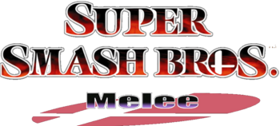

My Hobbies!
While I don't have many hobbies, the ones that I do enjoy I take very seriously. I am a big fan of trading card games. I've played Magic the Gathering for well over 10 years now, and I have recently fallen in love with a newer TCG called Flesh and Blood!

Super Smash Bros Melee for the Nintendo Gamecube is a beloved game from my childhood, and when I got older and was introduced to the competitive side of the game, I absolutely fell in love. The amount of technical skill and fast paced decision making that goes into a match is incredible, and even if you can't follow what is happening, it still cements itself as a very entertaining spectator sport.
Here is a video of the first time that I was able to play on stream at a tournament held at Vanderbilt University!
Another one of my hobbies is of course coding! I'm just now getting the opportunity to focus more heavily on coding, and hopefully soon be able to begin to do it professionally after college. Here is one of my most recent projects that I have done. A simple game of Pong that you can play in your web browser! Feel free to give it a go by clicking the link!
Pong!